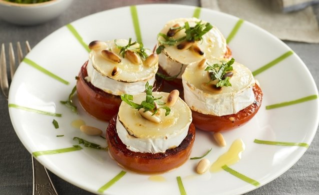

TOMATES CON MEDALLONES DE QUESO DE CABRA Y ALBAHACA

Consejo:
El queso de cabra es mas facil de digerir que el de vaca, ya que contienemenos lactosa, caseina y particulas grasas, además proporciona mayor oporte de proteinas y cacio, ideal para prevenir la osteoporosis.
Ingredientes para 4 personas
8 Tomates de rama
1 Rulo de queso de cabra
30g Piñones
2 Ramitas de albahaca fresca
30ml Aceite de oliva virgen extra
sal
Pimienta
Preparación:
Precalentamos el horno a 180 °C y mientras lava los tomates, retira los pedúnculos (rabitos) y cortalos cada uno en tres tres rodajas gruesas. Corta tambien el queso de cabra en rodajas gruesas.
Calienta un chorrito de aceite de oliva virgen extra en una sarten amplia, cuando este caliente añade las rodajas de tomate salpimentadas por ambas caras y dóralas 2 minutos. dales la vuelta y en ese momento coloca una rodaja de queso encima de cada una.
Cocina 2 minutos más, justo hasta que el queso empieze a fundirse con el calor, en ese momento apaga el fuego. Con la ayuda de una espumadera o espatula traslada las rodajas a una fuente de horno.
Reparte los piñones por encima de cada rodaja de queso, rocia con un chorritode aceite y gratina todo en el horno durante unos 3 minutos aproximadamente. Retiralos, espolvorea con albahaca fresca recien picada y sirve. Puedes comerlo caliente o templado.